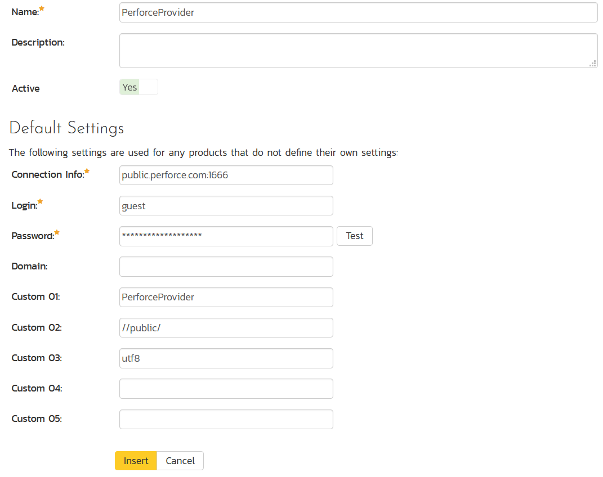
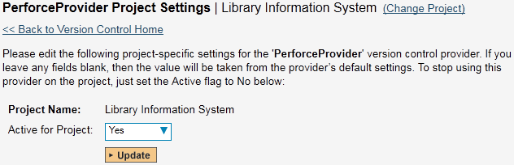
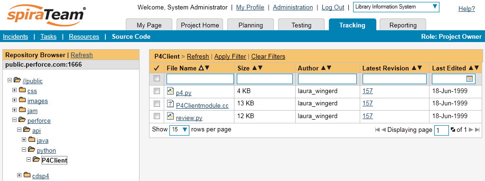
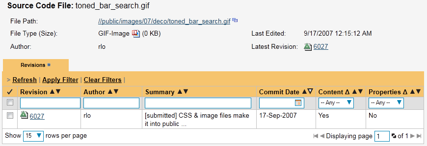

Integrating with Perforce
Installing the Perforce Plug-In
To install the Perforce Version Control plug-in, follow these steps:
-
Copy the following files to the folder named "VersionControl" in the SpiraTeam installation folder:
-
Inflectra.Global.dll
-
P4API.dll
-
P4DN.dll
-
PerforceProvider.dll
-
Log in as the Administrator and go into SpiraTeam main Administration page and click on the "Version Control" link under System.
-

Click the "Add" button to enter the Plug-in details page. The fields required are as follows:
-
Name: The name must be "PerforceProvider".
-
Description: The description is for your use only, and does not affect operation of the plug-in.
-
Active: If checked, the plug-in is active and able to be used for any project.
-
Connection Info: This field is the server's DNS or IP with the port to connect to. No depot information or root directory is to be specified here. Do not enter in any protocol, like http:// or ftp://.
-
Login / Password: The user id and the password of the user to use while accessing and retrieving information from the Subversion server. If either field needs to be blank, enter in 'anonymous'.
-
Domain: Not used.
-
Custom01: The client name is to be entered here. The plugin will attempt to create the client if it does not exist. Unless you have a client pre-defined for the plugin, we recommend using the default, "PerforceProvider".
-
Custom02: The base depot or root directory must be entered here.
-
Other Fields: The other custom fields (Custom03 -- Custom05) are not used by the plug-in and will be ignored.
-
When finished, click the "Insert" button and you will be taken back to the Version Control integration list page, with PerforceProvider listed as an available plug-in.
-

Verify that you are in the correct project using the drop-down at top, and click on the "Project Settings" link for the PerforceProvider. You will get a screen listing all the same configuration settings:
-
Be sure to change the Active field to Yes, or the repository will not be available for the current project.
-
Any other settings entered on this page will override - and have the same use as - the general settings that you created above. You would use these settings if you will have more than one project access different code repositories.
-
Initial setup is complete, click on the "Source Code" menu under the Tracking tab to navigate and browse the source code repository.
Using Perforce with SpiraTeam
While being able to browse the source code repository can be useful in itself, the real strength comes from linking artifacts in SpiraTeam - including Incidents, Requirements, and Tasks - to revisions checked into the software repository.
Viewing the Repository Tree
View the source code tree by selecting the "Source Code" link under the Tracking tab. You will get a screen similar to:

The folder tree of the repository is on the left, and files in the current selected directory will be listed in the right table. Note that this view will always show the current (HEAD) changelist of the depot. The file view will display the filename, the current change number of the file, the author of the last change, and the date of the last change. You can filter and sort on any of the columns, as well.
Viewing File Details
To view the file details, click on a file in the right-hand side of the screen. The file details page displays the details on the selected file. By default, it will be the HEAD change, unless you clicked to view the file details from a change. By clicking on the file name, you can download the specified change version of the file to your local machine. This does not open the file on the depot; you are merely downloading the file to your local machine.

Underneath the file's details is a list of all the changes that this file was changed in, who performed the change, and the log message for the change. Throughout SpiraTeam, changes are indicated by the
icon.
Change Details
By clicking on a change in SpiraTeam, you will be taken to the changelist details page:

The revision details screen shows the log for the change, the change date and author. At the bottom of the page are two tabs, Files and Associations. The Files tab lists all files that were a part of this change, with their full path and the action that was performed on them for this change. Possible values are Added, Modified, Deleted, or Other.
The Associations tab shows any artifact (Incident, Requirement, Test Case, Test Set) that the log message references. See Linking Artifacts for information on how to link a revision with a Perforce change:

Linking Artifacts
Linking an artifact is quite simple. To maintain the readability of Subversion's change messages, we adopted a bracket token. The token is in the format of:
[<artifact identifier>:<artifact id>]
The first half, the Artifact Identifier, is a two-letter code that is used throughout SpiraTeam, and is visible on almost every page in the application. For example, a requirement's identifier is "RQ". Incidents are "IN", and test cases are "TC". The artifact ID is the number of the artifact. So by creating a change message that reads:
SpiraTeam will automatically detect tokens and will include links to them under the Associations tab for a revision detail.
Troubleshooting
While integration with Perforce is rather complex, as a user you will only receive a couple of errors that will prevent the integration from working:
-
SpiraTeam will not display the login page, and there is an error
(either on the page or in the Application Event Log) that says "Could not load file or assembly." This simply means that not all of the required DLL libraries are present in the \VersionControl directory inside of the installation. It could also mean that the IIS Application Pool is not set to allow 32-bit applications. (At this time, there are no 64-bit DLLs available for the Perforce Provider.)
-
SpiraTeam reports that the login information is incorrect. In this
case, double check the Version Control settings, both for the Project (which overrides the general settings) and the general settings. Project settings will over-ride the general settings. Be sure to use a user that has access to all nodes in the tree starting from the root repository location.
-
If you are taken back to the repository screen and given a message
saying that the requested file was deleted from the system, this means that an attempt was made to view details on a file that is no longer part of the HEAD revision. This can happen when a file is deleted or renamed, and this is a normal condition in the code repository, not necessarily an error with Subversion or SpiraTeam.
-
Any other errors about not being able to load the version control
provider will have the error messages logged in the web server's (that hosts SpiraTeam) Application Event Log. When contacting support, be sure to have the event logs ready.